Chapter 23: Frame Synchronization and Packet Detection
In the previous chapter, we developed timing synchronization. The receiver learned how to determine the correct sampling instants so that the transmitted symbols could be recovered reliably.
But recovering symbols creates another question.
Suppose the receiver produces a continuous stream of symbols or bits:
... 1 0 1 1 0 0 1 0 0 1 1 0 0 1 0 1 1 0 1 1 0 0 1 0 ...Where does one message begin?
Which bits belong to the preamble?
Which bits belong to the payload?
A receiver may know when to sample and still have no idea where a frame begins.
That is the problem of frame synchronization.
In this chapter, we will build this idea experimentally. We will create repeated QPSK frames, insert a known preamble, detect it using correlation, investigate the effects of noise and detection threshold, compare different preamble sequences and lengths, and finally use GNU Radio stream tags to mark detected frame boundaries.
By the end of the chapter, the receiver will no longer see only a continuous stream of recovered symbols. It will begin to recognize the structure of the transmitted data.
23.1 The Main Question
How does a receiver determine where a frame or packet begins in a continuous received stream?
Carrier synchronization asks:
How do we correct carrier-frequency and phase errors?
Timing synchronization asks:
When should we sample the received waveform?
Frame synchronization asks:
Which recovered symbol or bit marks the beginning of the structured message?
Received waveform
|
v
Carrier synchronization
|
v
Timing synchronization
|
v
Recovered symbols
|
v
Symbol / bit decisions
|
v
Frame synchronization
|
v
Structured dataPractical receivers do not always implement every operation in exactly this order, but this is a useful conceptual progression.
23.2 From a Continuous Stream to a Frame
A practical digital communication system usually organizes information into frames or packets.
A simple frame can be represented as:
+----------+------------------+
| Preamble | Payload |
+----------+------------------+The payload contains the information we actually want to communicate. The preamble is a known sequence deliberately inserted by the transmitter.
Why transmit something the receiver already knows?
Because the known sequence gives the receiver a recognizable landmark. If every frame begins with the same preamble, the receiver can search the incoming stream for that pattern.
More elaborate systems may use:
+----------+----------+------------------+------+
| Preamble | Header | Payload | CRC |
+----------+----------+------------------+------+We do not need all of that structure yet. The important idea is:
A known preamble can help the receiver locate an otherwise unknown frame boundary.
Experiment 23.1: Creating a Repeated QPSK Frame
What Are We Trying to Discover?
Before detecting a frame, we first need to create one.
Conceptually, the transmitted stream has the form:
Preamble | Payload | Preamble | Payload | Preamble | Payload | ...GNU Radio Flowgraph
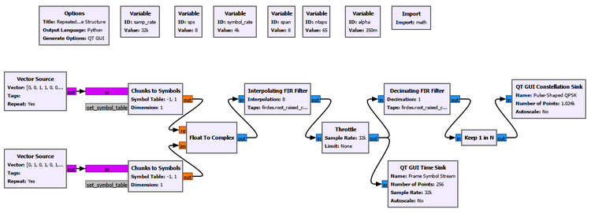
The flowgraph uses the QPSK construction developed earlier in the book. The important change is not the modulation itself. It is the data structure being transmitted.
Important Setup
| Parameter | Value |
|---|---|
| Sample rate | 32 kS/s |
| Symbol rate | 4 ksym/s |
| Samples per symbol | 8 |
| RRC roll-off factor | 0.35 |
| RRC span | 8 symbols |
| Number of RRC taps | 65 |
What Do We Expect?
Because the transmitted data repeats, the resulting QPSK symbol pattern should also repeat. At this stage, however, the receiver is not performing frame detection.
What Do We See?
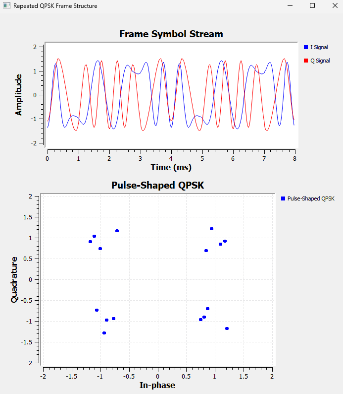
The repeated transmission gives us a known sequence that occurs periodically inside a continuous signal.
The preamble does not primarily carry new user information. Its physical purpose is to make the frame recognizable.
23.3 Searching for the Preamble with Correlation
We already have the DSP operation we need: correlation.
In Chapter 12, correlation answered:
How similar are two signals?
Now it becomes a practical receiver tool.
Poor match -> small correlation
Partial match -> intermediate correlation
Preamble match -> large correlation peakLet the known preamble contain (N) complex symbols. One form of sliding correlation is:
\[ C[k]=\sum_{n=0}^{N-1}r[k+n]p^*[n] \]
The receiver can examine:
\[ |C[k]| \]
When the received samples align with the known preamble, the terms reinforce one another and a correlation peak appears.
The key idea is:
Correlation combines evidence from the entire known sequence instead of making a decision from only one received sample.
Experiment 23.2: Detecting the Preamble with Correlation
What Are We Trying to Discover?
Can correlation reveal the positions of the repeated preamble?
GNU Radio Flowgraph
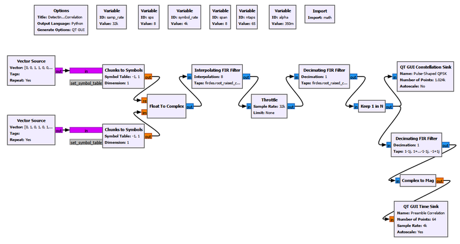
What Do We Expect?
Because the same preamble occurs once per frame, we expect strong correlation peaks at regular intervals.
What Do We See?
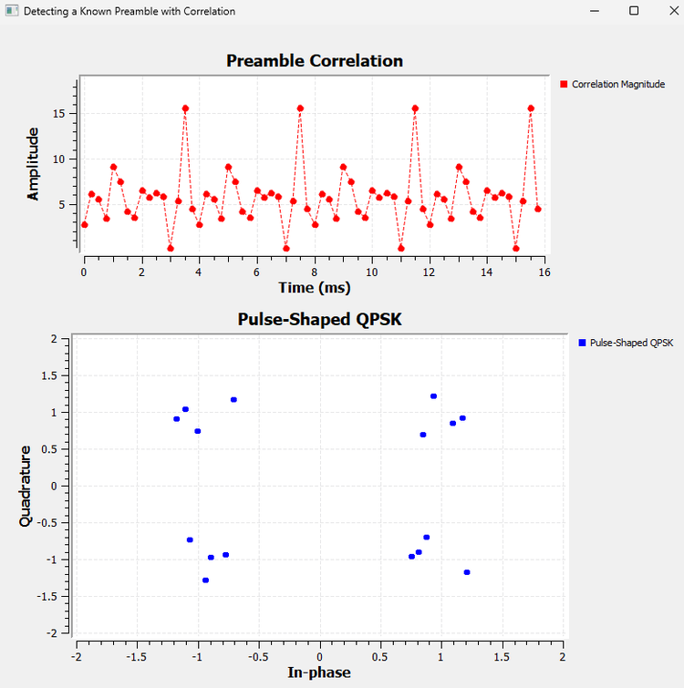
Strong peaks appear periodically. The receiver does not need to know the payload. It only needs to recognize the known sequence.
Correlation has now changed from an abstract similarity measure into a practical synchronization mechanism.
23.4 Correlation in Noise
A simple noisy received signal is:
\[ r[n]=s[n]+w[n] \]
Noise changes individual samples, but correlation combines information from several known symbols. Random noise does not normally reinforce itself in the same structured way as the correctly aligned preamble.
This does not make correlation immune to noise. Sufficiently strong noise eventually makes detection unreliable.
Experiment 23.3: Preamble Detection in Noise
What Are We Trying to Discover?
We observe both how the recovered QPSK symbols degrade and whether the preamble correlation peaks remain recognizable.
Only the Noise Voltage in the Channel Model is changed.
What Do We Expect?
As noise increases, the QPSK constellation should spread, correlation values should fluctuate, and preamble detection should eventually become more difficult.
What Do We See?
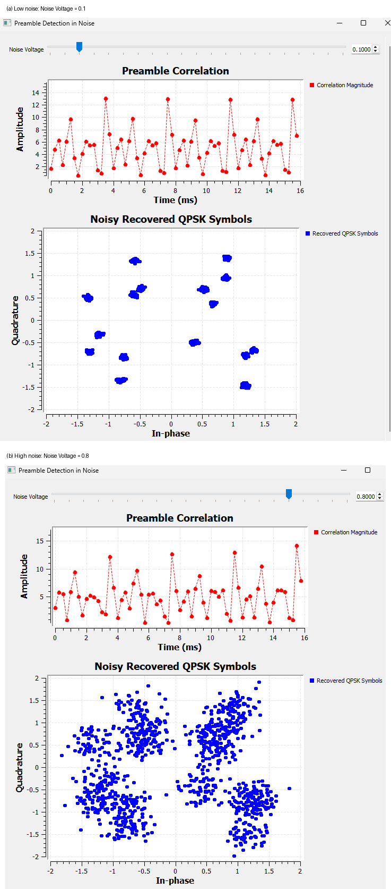
As noise increases, the QPSK points spread and the correlation response becomes more variable. Nevertheless, useful preamble peaks remain recognizable over a range of noise levels.
A human can visually identify a peak, but a receiver needs a numerical decision rule.
That motivates the detection threshold.
23.5 Turning a Correlation Peak into a Detection
Suppose a preamble is declared whenever:
\[ |C[k]|>T \]
where (T) is the detection threshold.
A low threshold makes the detector sensitive, but payload patterns or noise fluctuations may also cross it. This can produce false detections.
A high threshold makes the detector selective, but a genuine corrupted preamble may fail to cross it. This produces a missed detection.
Low threshold
|
v
More sensitive
|
+--> more genuine detections
|
+--> more false detections possible
High threshold
|
v
More selective
|
+--> fewer accidental detections
|
+--> more missed detections possibleThere is no universal best threshold.
GNU Radio Toolbox: Threshold
The Threshold block converts a continuous-valued input into a state determined by its Low and High levels.
Important parameters are:
Low
High
Initial StateIn this experiment it helps turn the continuous correlation information into a detection output.
The GUI also displays a separate detection-threshold reference so that the selected decision level can be compared directly with the correlation magnitude.
Experiment 23.4: Effect of Detection Threshold
What Are We Trying to Discover?
We compare thresholds that are low, useful for the current signal, and too high.
| Detection threshold | Observation |
|---|---|
| 7 | Sensitive; more values qualify |
| 11 | Useful separation in this experiment |
| 14 | Above the genuine observed peaks |
What Do We See?
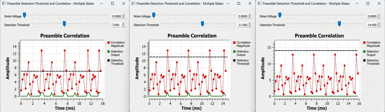
A threshold of 7 makes the detector respond readily. Around 11, the strongest preamble peaks are separated more clearly from the lower correlation values. At 14, genuine peaks do not reach the decision level and are missed.
For this experiment, 11 was a useful choice. It is not a universal value. The correct threshold depends on signal scaling, preamble length and sequence, noise, channel conditions, and the desired false-alarm versus missed-detection trade-off.
The physical meaning is simple:
The threshold represents how much evidence the receiver demands before accepting that the preamble has been found.
Try It Yourself
Predict what will happen as the threshold is moved gradually from 7 toward 14. Then add noise and repeat the test. Does the same threshold remain equally useful?
Experiment 23.5: Effect of Preamble Sequence and Length
What Are We Trying to Discover?
We compare:
- the correct 8-symbol preamble,
- a wrong 8-symbol preamble,
- a shorter 4-symbol preamble.
For the final comparison, the detection threshold is 7.
What Do We See?
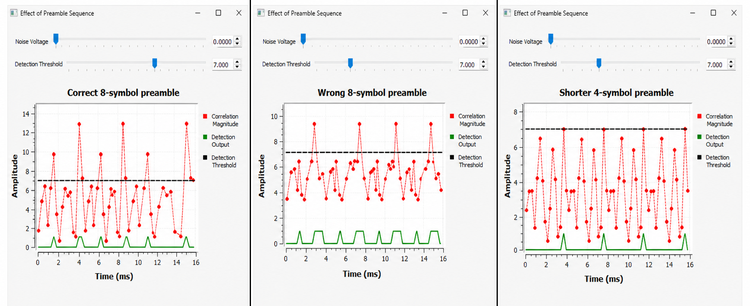
The correct 8-symbol preamble produces strong, clearly separated peaks.
For the wrong 8-symbol comparison, we used:
[1+1j, 1-1j, -1-1j, -1+1j, 1+1j, 1-1j, -1-1j, -1+1j]Its correlation response is weaker and less distinctive than the correct sequence.
The shorter 4-symbol preamble still produces periodic detections, but the peak magnitude is lower because fewer known symbols contribute to the correlation sum.
This gives two lessons.
First, sequence choice matters. A useful preamble should produce a distinctive correlation response.
Second, preamble length is a trade-off:
Longer preamble
|
v
More correlation evidence
|
v
Potentially more reliable detection
|
v
More overheadA shorter preamble reduces overhead but gives the receiver less evidence.
Longer is not automatically better. The sequence’s correlation properties also matter.
We do not need a constellation plot for this experiment because the question concerns preamble correlation, not modulation quality.
23.6 From Correlation Peaks to Receiver Events
A practical receiver needs more than a plot. It needs to communicate:
“I found the access code here.”
GNU Radio can attach metadata to a particular stream position using a stream tag.
Stream items:
... 0 1 1 0 0 1 0 1 1 0 1 1 0 0 1 0 ...
^
|
frame_start tagThe tag does not replace the stream item. It adds information about that position.
GNU Radio Toolbox: Correlate Access Code - Tag
The Correlate Access Code - Tag block searches a bit stream for a specified binary access code and inserts a tag when it is detected.
Our important settings are:
Access Code: 10110010
Threshold: 0
Tag Name: frame_startHere the meaning of Threshold is different from the earlier correlation-magnitude threshold.
For this block:
Threshold is the number of access-code bit errors that may be tolerated.
Therefore:
Threshold = 0requires an exact match, while:
Threshold = 1allows one bit mismatch.
GNU Radio Toolbox: Tag Debug
The Tag Debug block displays stream tags in the GNU Radio console.
We use:
Name: Access Code Detection
Key Filter: frame_start
Display: OnA typical result contains:
Offset: 24
Key: frame_start
Value: 0The offset identifies the stream position, the key identifies the tag, and the value can provide additional detector information.
23.7 Two Different Meanings of Threshold
The two thresholds used in this chapter must not be confused.
| Threshold | Meaning |
|---|---|
| Correlation detection threshold | Minimum correlation evidence required for detection |
| Correlate Access Code - Tag threshold | Maximum tolerated access-code bit errors |
A correlation threshold of 11 and an access-code threshold of 1 describe completely different quantities.
Experiment 23.7: Access-Code Error Tolerance
What Are We Trying to Discover?
What happens when one access-code bit is corrupted?
With:
Threshold = 0the detector requires an exact match. The one-bit-corrupted access code produces no detection output.
We then change only:
Threshold = 1so that one mismatch is allowed.
What Do We See?
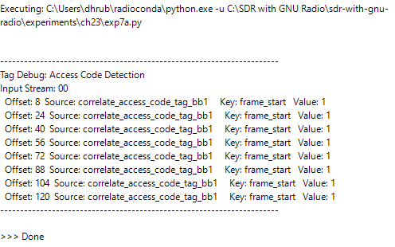
The detector now produces frame_start tags and reports:
Value: 1for the accepted one-bit mismatch.
This introduces another trade-off:
Strict matching
|
+--> fewer accidental matches
|
+--> corrupted access codes may be missed
Error-tolerant matching
|
+--> survives some access-code errors
|
+--> more unintended sequences may qualifyTry It Yourself
Predict what will happen before increasing the access-code threshold beyond 1. At what point does the detector become too willing to accept unintended patterns?
23.8 Putting Frame Detection into the QPSK Receiver
The direct bit-stream experiment isolated the access-code detector. We now integrate it into the communication chain.
QPSK frame
|
v
Pulse shaping
|
v
Channel
|
v
Matched filtering
|
v
Symbol synchronization
|
v
Recovered QPSK symbols
|
v
Bit decisions
|
v
Access-code detection
|
v
frame_start tagsGNU Radio Toolbox: Binary Slicer
The Binary Slicer converts a real-valued input into binary decisions.
Conceptually:
negative value -> 0
positive value -> 1The synchronized QPSK symbols are separated into I and Q components, and a Binary Slicer makes a bit decision on each component.
GNU Radio Toolbox: Interleave
The Interleave block combines input streams by taking items from them in turn.
Input 0: a0 a1 a2 a3 ...
Input 1: b0 b1 b2 b3 ...
Output: a0 b0 a1 b1 a2 b2 a3 b3 ...Here it reconstructs the serial bit sequence from the I and Q decisions.
GNU Radio Toolbox: Head
The Head block passes only a specified number of items and then stops the flowgraph.
For the final experiment:
Num Items: 128This prevents the repeating source and Tag Debug block from producing an endless console output. Head does not perform synchronization; it only gives us a finite observation interval.
Experiment 23.8: QPSK Frame Detection
What Are We Trying to Discover?
Can we recover QPSK symbols, convert them back into bits, and detect the repeated frame boundary in the complete receiver?
GNU Radio Flowgraph
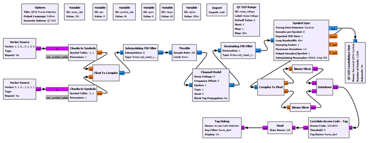
Important Setup
| Parameter | Value |
|---|---|
| Sample rate | 32 kS/s |
| Symbol rate | 4 ksym/s |
| Samples per symbol | 8 |
| RRC roll-off factor | 0.35 |
| RRC span | 8 symbols |
| RRC taps | 65 |
| Access code | 10110010 |
| Access-code threshold | 0 |
| Tag name | frame_start |
| Head | 128 items |
The Symbol Sync settings established in Chapter 22 are retained:
Timing Error Detector: Gardner
Samples per Symbol: 8
Expected TED Gain: 1
Loop Bandwidth: 0.045
Damping Factor: 1
Maximum Deviation: 1.5
Output Samples/Symbol: 1
Interpolating Resampler: MMSE, 8 tap FIRFrame synchronization does not replace timing synchronization.
Timing synchronization answers:
Where should I sample each symbol?
Frame synchronization answers:
Which recovered symbol or bit belongs to the beginning of the frame?
What Do We See?
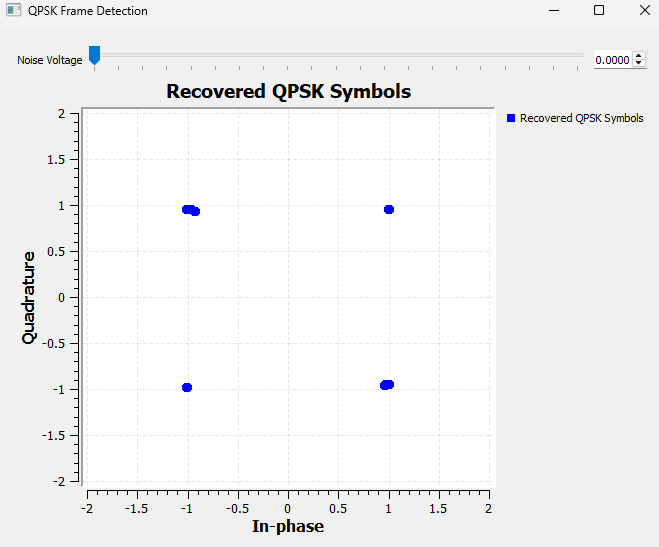
The recovered constellation forms four compact QPSK clusters.
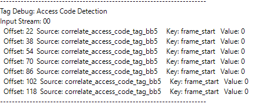
The Tag Debug output contains detections at:
22
38
54
70
86
102
118Again:
\[ 38-22=16 \]
The spacing agrees with the 16-bit frame length.
But the first tag is now at offset 22 rather than 8.
Why Did the Absolute Tag Offset Change?
The complete receiver contains filtering and synchronization stages that were absent from the direct-bit experiment. These stages introduce processing delay and transient behavior.
Therefore the absolute offset changes.
The important observation is:
\[ n_{k+1}-n_k=16 \]
Receiver processing can change the absolute stream position at which a detection appears while the spacing between repeated detections still reveals the correct frame structure.
Experiment 23.8 Continued: Frame Detection in Noise
What Are We Trying to Discover?
We now observe both symbol quality and frame-detection output while increasing the Channel Model noise voltage.
We compare:
Noise Voltage = 0
Noise Voltage = 1.5
Noise Voltage = 2The access-code detector settings remain unchanged.
What Do We See?
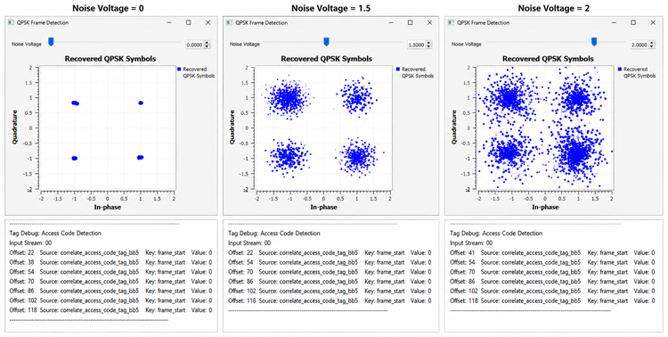
Noise Voltage = 0
The constellation contains four compact clusters and the tags occur at:
22
38
54
70
86
102
118Frame synchronization works correctly.
Noise Voltage = 1.5
The constellation spreads significantly. The detected tags are:
22
54
70
86
102
118The expected tag at 38 is missing.
This is a missed detection.
The constellation is still recognizably QPSK, yet packet-level synchronization has already begun to fail.
Noise Voltage = 2
The constellation is much more severely dispersed. The detected offsets include:
41
54
70
86
102
118The normal sequence is disrupted and an unexpected detection appears at 41.
At this noise level, bit errors can destroy genuine access-code matches and can also create unintended patterns that resemble the access code.
The exact erroneous positions are not universal because the noise realization is random. The important conclusion is:
As bit decisions become unreliable, frame detection can suffer both missed detections and false detections.
23.9 Why Not Simply Increase the Error Threshold?
After seeing missed detections in noise, it is natural to ask why we do not simply allow more access-code errors.
That can help genuine frames survive access-code corruption, but Experiment 23.7 showed the cost.
More error tolerance
|
+--> fewer missed detections from corrupted preambles
|
+--> greater chance of accidental matchesThere is no free correction. Access-code length, sequence, and tolerated errors must be chosen according to expected channel conditions and acceptable false-detection behavior.
23.10 Preamble, Access Code, and frame_start
These related terms should remain distinct.
A preamble is a known sequence transmitted to help the receiver with detection or synchronization.
An access code is the known binary pattern searched for by the GNU Radio access-code detector. In our experiments:
10110010was the access code.
frame_start is not transmitted over the channel. It is a GNU Radio stream-tag key created inside the receiver after detection.
Transmitter:
Access code | Payload
10110010 | 01100101
Receiver:
Recovered bits
|
v
Find 10110010
|
v
Attach metadata:
frame_startThe transmitter sends the preamble or access code. The receiver creates the frame_start tag.
23.11 Physical Meaning of Frame Synchronization
Imagine a receiver continuously listening to a radio channel.
Samples keep arriving. After carrier and timing recovery, symbols keep arriving. After decisions, bits keep arriving.
But the receiver still needs to know which bits belong together.
The preamble provides a landmark. Correlation searches for that landmark. The detection rule decides whether the evidence is strong enough. A stream tag can then record the detected position for later receiver stages.
Known sequence inserted by transmitter
|
v
Signal travels through the channel
|
v
Receiver recovers symbols / bits
|
v
Receiver searches for known sequence
|
v
Known sequence detected
|
v
Frame position identified
|
v
Payload interpreted relative to that positionFrame synchronization converts a continuous received stream into structured communication.
23.12 Frame Synchronization Does Not Guarantee Correct Data
A detected frame boundary tells us where the frame is.
It does not prove that every payload bit is correct.
For example:
Transmitted payload: 01100101
Received payload: 01101101
^
errorThe receiver may have recovered the carrier correctly, found the symbol timing, detected the access code, and identified the frame boundary, yet noise can still cause individual symbol decisions to be wrong.
This leads to an important distinction:
Frame synchronization
|
v
Where does the frame begin?
Error detection
|
v
Was the recovered frame corrupted?
Error correction
|
v
Can some of the corrupted information be recovered?Practical communication systems therefore often perform additional processing after the frame has been recovered.
One common approach is to include an error-detection field, such as a cyclic redundancy check (CRC), in the transmitted frame:
+----------+----------+------------------+------+
| Preamble | Header | Payload | CRC |
+----------+----------+------------------+------+The CRC is calculated from the transmitted data and sent along with the frame. After reception, the receiver performs the corresponding check. If the received data has been corrupted, the check will usually fail, allowing the receiver to reject the damaged frame rather than silently accepting incorrect information.
Error detection tells the receiver that something went wrong, but it does not necessarily repair the data.
Some communication systems therefore also use forward error correction (FEC). The transmitter deliberately adds structured redundancy to the information before transmission. If the channel corrupts some of the transmitted information, the receiver can use this additional structure to correct certain errors without requiring the entire frame to be transmitted again.
Conceptually:
Information bits
|
v
Add structured redundancy
|
v
Transmit through channel
|
v
Some bits may be corrupted
|
v
Use redundancy at receiver
|
v
Attempt to recover informationThe additional reliability is not free. Redundant bits consume transmission resources, and stronger error protection generally introduces additional overhead and processing.
Error-control coding is a substantial subject in its own right. Practical systems use techniques ranging from CRCs and relatively simple error-correcting codes to convolutional, Reed-Solomon, LDPC, and Polar codes. Their detailed encoding and decoding algorithms belong to the broader subject of channel coding and are beyond the experimental scope of this book.
For our receiver, the important conclusion is:
Successful frame synchronization tells us where the data is, but it does not guarantee that the data is correct.
A complete practical communication system may therefore continue beyond frame detection with error detection, error correction, protocol processing, and finally delivery of the recovered payload.
23.13 Putting It All Together
The chapter developed frame synchronization progressively:
Continuous symbol stream
|
v
Create repeated frames
|
v
Insert a known preamble
|
v
Search using correlation
|
v
Observe correlation peaks
|
v
Introduce a detection threshold
|
v
Study false and missed detections
|
v
Compare preamble sequences and lengths
|
v
Detect a binary access code
|
v
Create frame_start stream tags
|
v
Allow controlled access-code errors
|
v
Integrate detection into a QPSK receiver
|
v
Observe frame-detection failure in noiseCorrelation, first introduced as a general DSP tool, has become a synchronization mechanism.
Timing synchronization determines useful symbol sampling instants. Symbol decisions recover bits. Frame synchronization then organizes those bits around recognizable boundaries.
The receiver is becoming progressively more complete.
23.14 Practical SDR Perspective
Real radio systems often use carefully designed synchronization sequences rather than arbitrary preambles.
Their design may consider:
- autocorrelation properties,
- cross-correlation properties,
- preamble length,
- false-alarm probability,
- detection probability,
- channel distortion,
- carrier offset,
- timing uncertainty,
- multipath,
- computational complexity.
Sequences such as Barker sequences, Gold codes, and Zadoff-Chu sequences appear in different communication and ranging systems because sequence design can strongly affect synchronization performance.
We will not develop those sequence families here. The fundamental principle established by our experiments is:
A receiver can detect structure in an unknown stream by searching for a known transmitted pattern.
23.15 Try It Yourself: Design Your Own Frame Detector
Start from Experiment 23.8 and predict each result before changing the flowgraph.
- Change the 8-bit access code while leaving the transmitted frame unchanged.
- Restore the correct code and increase the allowed access-code error threshold.
- Increase the noise until detections become unreliable.
- Change the payload and observe whether accidental access-code-like patterns appear.
- Increase the Head length and observe many more frames.
A detector that succeeds once is not necessarily a reliable detector. Practical synchronization must work repeatedly under changing channel conditions.
23.16 What We Learned
In this chapter, we learned that:
- timing synchronization and frame synchronization solve different problems;
- timing synchronization determines when to sample, while frame synchronization determines where structured data begins;
- a known preamble gives the receiver a recognizable landmark;
- correlation can search the received stream for that known sequence;
- a correctly aligned preamble produces a strong correlation response;
- correlation can remain useful in noise because it combines evidence across multiple known symbols;
- a correlation detection threshold trades sensitivity against false and missed detections;
- the useful threshold depends on the actual signal and channel conditions;
- preamble sequence choice and preamble length affect the correlation response;
- shorter preambles reduce overhead but provide less correlation evidence in our experiment;
- GNU Radio stream tags attach metadata to positions in a stream;
Correlate Access Code - Tagcan detect a known binary access code and create aframe_starttag;- the access-code threshold represents tolerated bit mismatches, not correlation magnitude;
- with threshold 0, a one-bit-corrupted access code was rejected;
- with threshold 1, the one-bit-corrupted access code was accepted;
- our direct 16-bit repeated frame produced tags separated by 16 items;
- the access-code tag appears after the detected code in the direct-bit experiment;
- receiver filtering and synchronization can change absolute tag offsets;
- the spacing between repeated tags can still reveal the correct frame length;
- a complete QPSK receiver can recover symbols, make bit decisions, detect an access code, and mark frame boundaries;
- increasing noise can cause missed frame detections;
- sufficiently severe noise can also produce unintended detections;
- frame synchronization identifies the frame boundary but does not guarantee that the payload bits are correct.
The receiver now knows more than how to recover a waveform or symbol. It has begun to understand the structure of the transmitted information.
23.17 Connecting to the Next Chapter
We have now developed the major building blocks required by a practical single-carrier digital receiver.
Starting from QPSK modulation and pulse shaping, we introduced channel impairments, equalization, carrier synchronization, timing synchronization, and finally frame synchronization. Each stage was developed separately so that we could understand the particular problem it solves.
We can now step back and look at the larger picture.
So far, we have deliberately isolated many of these receiver functions while studying them. In a practical receiver, however, they do not operate as independent experiments. They must work together as parts of a complete signal-processing chain.
Conceptually, the receiver we have been developing has gradually become something like:
Received IQ
|
v
Channel Filtering
|
v
AGC
|
v
Matched Filter
|
v
Carrier Recovery
|
v
Timing Recovery
|
v
Equalization
|
v
Symbol Decisions
|
v
Frame Detection
|
v
Recovered BitsThe exact arrangement is not always as simple as this diagram suggests. Some receiver operations interact with one another, and the most appropriate ordering can depend on the particular communication system and synchronization strategy.
This raises an important question:
Can we now combine everything we have learned into one complete single-carrier digital receiver?
That is the goal of the next chapter.
Rather than introducing another isolated receiver algorithm, we will bring the previous ideas together into a complete software transmitter, channel, and receiver in GNU Radio.
We will begin under controlled conditions and verify that the complete receiver can recover the transmitted information correctly. We will then introduce impairments and examine how the different receiver stages work together.
More importantly, we will deliberately break the receiver.
By disabling or disturbing individual stages, we will observe what happens when carrier recovery is missing, timing recovery fails, equalization is removed, or frame synchronization is unavailable. This will allow us to connect the visual symptoms at the receiver with the particular signal-processing problem responsible for them.
The objective is not simply to construct a large GNU Radio flowgraph.
The objective is to understand why every major receiver stage exists and what happens when it does not perform its job.
Once the complete single-carrier receiver is understood as a system rather than as a collection of separate blocks, we will be ready to move beyond it and ask whether there are fundamentally different ways to transmit information through difficult channels.